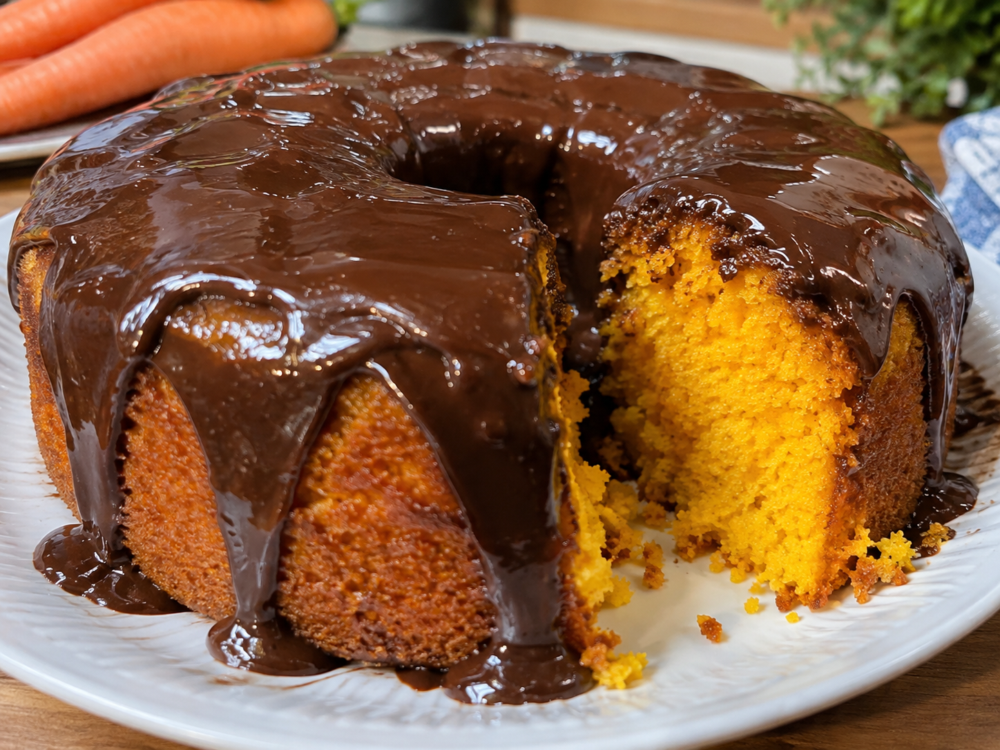

Receitas da Vovó
Bolo de Cenoura com Cobertura de Chocolate
Um clássico brasileiro, perfeito para o café da tarde. Fofinho, fácil de fazer e com uma cobertura de chocolate que derrete na boca!

Ingredientes do Bolo
- 4 ovos
- 3 cenouras médias
- Meia xícara de óleo
- 2 xícaras de açúcar
- 2 xícaras e meia de farinha de trigo
- 1 colher de sopa de fermento em pó
Cobertura de Chocolate
- 4 colheres de sopa de açúcar
- 4 colheres de sopa de chocolate em pó
- 2 colheres de sopa de manteiga
- 4 colheres de sopa de leite
Modo de Preparo
(Massa)
- Bata no liquidificador as cenouras, os ovos e o óleo.
- Despeje a mistura em uma tigela e acrescente o açúcar e a farinha.
- Misture bem até ficar homogêneo.
- Por último, adicione o fermento e misture delicadamente.
- Despeje a massa em uma forma untada e enfarinhada.
- Asse em forno pré-aquecido a 180 graus por cerca de 40 minutos.
(Cobertura)
- Em uma panela, coloque o açúcar, o chocolate em pó, a manteiga e o leite.
- Leve ao fogo médio, mexendo sempre.
- Quando começar a ferver, cozinhe por mais 2 a 3 minutos, até a cobertura engrossar levemente.
- Despeje a cobertura ainda quente sobre o bolo.
- Espalhe bem e deixe descansar alguns minutos antes de servir.
Informações Extras
Tempo de preparo: 50 minutos
Rendimento: 8 porções
Dificuldade: Fácil
Clique aqui para buscar mais receitas no Google.